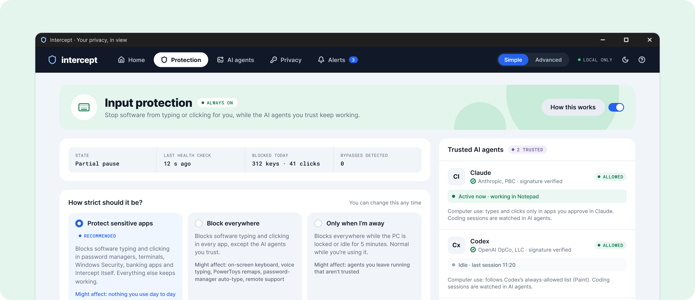

Input protection
Stop software from typing for you, without stopping the agents you trust.
Remote-control tools, macros and compromised apps act by injecting keystrokes and clicks. Intercept blocks the input Windows flags as injected, in the apps you choose, for as long as you choose.
No time limit
Armed at Windows sign-in
Matched by publisher signature

How it works
Blocks the input Windows marks as injected.
Windows sets a flag on keyboard and mouse events that software injects. Intercept’s guard reads that flag before the event reaches an app, and stops it when the app is one you protect.
01
Flagged by Windows
A program injects keys or clicks with SendInput or a similar call. Windows marks each of those events as injected.
02
Matched to the app
The guard looks up the app the input is aimed at by its signature, package or path. Never by file name alone.
03
Stopped and recorded
If the app is protected, the event is stopped. A receipt keeps the recipient, time and count. Never the keys.
Three levels
Choose how strict it should be.
Each level says what it might affect before you choose it, and you can change it at any time. Turning protection on never asks for confirmation. Turning it off always does.
Sensitive apps
Default
Blocks software typing and clicking in password managers, terminals, Windows Security and Intercept itself. Everything else keeps working.
Might affect
Nothing you use day to day
Everywhere
Blocks software typing and clicking in every app, except in the apps your trusted AI agents are approved for.
Might affect
On-screen keyboards, voice typing, PowerToys remaps, password-manager auto-type, remote support
Only when I’m away
Blocks everywhere while the PC is locked or idle for 5 minutes. Works normally while you are using it.
Might affect
Agents you leave running that aren’t trusted
No time limit
Stays on until you turn it off. Turning it off switches back on after 15 minutes by default.
Armed at sign-in
A per-user task arms the guard as Windows signs you in, before most startup apps run.
Re-armed within 2 s
A watchdog restarts the guard if it stops, and records every gap with its cause.
Protected apps
Matched by publisher signature, never by name.
Add the apps that hold your secrets. Intercept identifies each one by its Windows signature, package or install path, so a renamed copy can’t slip into or out of the list.
Intercept itself, Windows Security, Windows sign-in prompts and Windows terminals are always protected, and can’t be removed in Simple mode.
Protected apps
9 apps
Intercept
Windows Security
Sign-in prompts
Windows Terminal
PowerShell
Command Prompt
1Password
Bitwarden
KeePassXC
Add app
Matched by | Example |
|---|---|
Signer | AgileBits Inc. · 1Password |
Package family | Microsoft.WindowsTerminal_8wekyb3d8bbwe |
Install path | C:\Program Files\KeePassXC\KeePassXC.exe |
Honest coverage
Clear about what it can’t stop.
No single Windows hook can stop every way software controls an app. Intercept pauses one route and reports the other seven as not paused, route by route. It never shows a blanket “protected” claim.
Read the coverage notes
Windows keyboard and mouse injection
Paused
Synthetic touch and pen
Not paused
Virtual or remote input devices
Not paused
Accessibility actions (UI Automation)
Not paused
Browser automation
Not paused
Window messages and app APIs
Not paused
Other desktops and sessions
Not paused
Unknown and future routes
Not paused
With AI agents
Agents you trust keep working.
While a trusted Claude or Codex session is active, its input reaches only the apps you approved for it. Protected apps stay protected, for every agent.
Claude: terminals, IDEs and browsers are never on its approved list
Codex: follows its always-allowed list in config.toml, minus terminals and elevated apps
Labelled honestly: allowed under the agent’s session
No active session, no allowance
Explore AI agents
Two events during one Claude session
session
claude.exe · Anthropic, PBC ✓
recipient
notepad.exe · approved for Claude
Allowed under session · logged
session
claude.exe · Anthropic, PBC ✓
recipient
1password.exe · protected app
Blocked · always alerts
Keep reading
Coverage notes
Every input route, what Intercept can see on it and what it can’t.
Read the coverage notes
Security brief
What is recorded, what never is, and the permissions each feature needs.
Read the security brief
See what your PC is really doing.
Free, MIT-licensed and local. Ready in a few minutes.